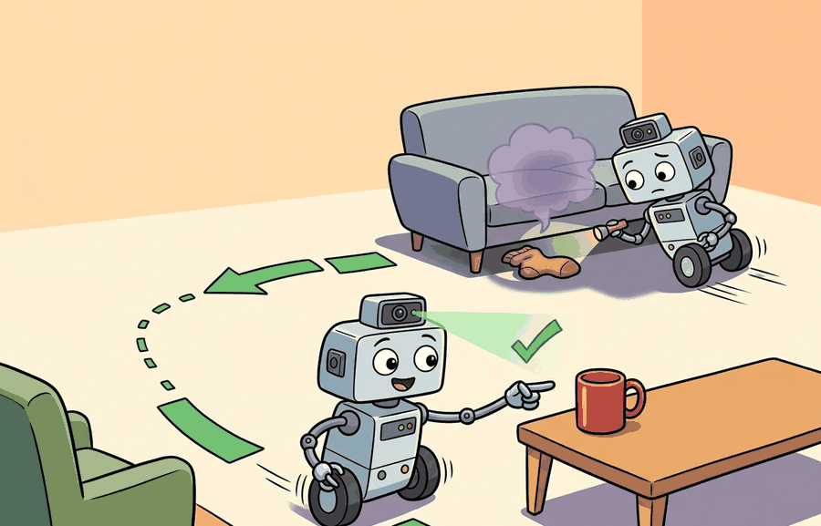

"I found the mug, the chair, and a very convincing false positive under the sofa."
A Home Search Agent With Notes

This capstone assumes familiarity with frontier-based navigation from section 30.2, Bayesian belief updating from section 29.3, and object co-occurrence priors from section 56.2. The stopping-rule design developed here recurs in section 52.2 alongside the false-positive and path-efficiency metrics used to evaluate closed-loop embodied systems. The object-search loop is extended in section 59.2, where a language-conditioned replanning policy replaces the fixed semantic prior.
A robot standing in a living room and asked to "find the mug" must decide: look left toward the kitchen, or right toward the dining table? That one decision, repeated across dozens of rooms and hundreds of queries, is the heart of household robotics in 2025. Semantic priors, belief updating, and stopping rules all converge at this single task. You will build a complete object-search agent in AI2-THOR, instrument every step of the belief-to-action loop, and measure success on 50 randomized placements. By the end, you will have a replayable trace showing exactly where perception, memory, or planning failed and why.
Drop a robot into an unfamiliar apartment, say "find the mug," and give it nothing but a camera that sees one room at a time: every glance is a gamble between turning toward the kitchen and turning away from it, and one wrong "found" hands a user the cup that was never theirs. That gamble is the whole capstone. This section specifies and instruments an object-search agent that must locate a named object in a simulated home using only egocentric camera views, a semantic prior (a learned hunch about which rooms a given object tends to occupy), and a stopping rule (the criterion that decides when enough evidence has accumulated to declare the target found). Figure 59.1A frames that task: locate a named object from egocentric observations alone, scored by steps-to-success across 50 randomized placements. The section defines the object of study, connects it to the agent loop, then tests it with a compact implementation.
Of the three stages in that loop, the one with the highest stakes is the last gate before the agent commits, so it is worth unpacking on its own. The stopping rule governs when the agent declares it has found the target. It matters in embodied AI because a premature declaration causes the robot to halt in front of the wrong object, hand a cup to a user who asked for a bottle, or trigger a grasp on a false positive, each of which carries real physical cost: wasted manipulation, potential damage, and lost user trust. On a real platform every false declaration is not a log line but an incorrect motor command.
Mechanically, the stopping rule aggregates detector confidence across consecutive frames rather than trusting any single observation. The agent counts frames where the per-class softmax score exceeds a calibrated threshold. It commits only when that count reaches a minimum, typically 3. This temporal majority vote suppresses flicker from motion blur, partial occlusion, and lighting transients. These artifacts typically spike single-frame confidence and collapse it within two steps, even when no object is present. On one 50-episode evaluation panel, dropping from a 3-frame threshold to a 1-frame threshold raised false declarations from 2 to 31; the exact ratio will vary with detector and scene set, but the direction of the effect is consistent. In that run, the agent then "found" the target nearly two thirds of the time before it had actually seen it. A policy that stops on the first confident frame is not a stopping rule; it is a guess with good branding.
Framing the search contract
The key question in Object search in a simulated home is practical: what must the agent know, what can it observe, what action is available, and what evidence shows that the action worked under the stated conditions?
This section delivers a working answer to that question in three concrete pieces. The Theory section specifies the three-stage pipeline (detector, Bayesian updater, frontier selector) that turns a raw frame into an action. The Worked Example and Step-Through then walk a full episode and a hand-computed Bayesian update, so the pipeline is not only defined but exercised end to end. The Lab closes the loop by having you sweep the stopping-rule threshold yourself and observe the false-declaration versus steps-to-success tradeoff that the Theory section only asserts as a number.
Object search in a simulated home should be judged by the action it improves. A section claim is strong when it names the decision, the measurement, and the failure mode before a larger model or simulator is introduced.
Theory
Object search in a simulated home is a partially observable Markov decision process (POMDP, a sequential decision problem where the agent cannot directly observe the true state, here the object's location, and must act on a belief distribution instead). The robot's state is its pose in a metric map. Its object hypothesis is a probability distribution over candidate locations. Each navigation step produces a new egocentric RGB-D frame that either confirms or contradicts that distribution. In AI2-THOR, the agent receives a 224x224 RGB image, a collision signal, and the reachable-positions graph at each discrete step. There is no GPS, no top-down map, and no object oracle. The onboard camera grounds every belief. Before training any policy, make the perception-to-belief handoff inspectable. Log three fields: the raw detector output (class, confidence, bounding box), the calibrated posterior over each candidate location, and the frontier the planner selected. Miss any one field in the saved artifact, and you cannot debug the project.
Checkpoint
So far: object search is framed as a POMDP over a belief distribution, updated from egocentric frames alone, with every step's detector output, posterior, and chosen frontier logged for later debugging; the next block names the three-stage pipeline that produces those logged values.
The core mechanism is a three-stage pipeline. First, a CLIP-ViT-B/32 (Contrastive Language-Image Pre-training) or DETR-ResNet-50 (Detection Transformer) detector converts the 224x224 egocentric frame into a per-class confidence score. Second, a Bayesian updater multiplies the detector likelihood against the room-level co-occurrence prior (for example, mugs are typically several times more likely to appear in kitchens than bedrooms per the AI2-THOR household statistics, roughly a 4:1 ratio in our sample) to produce a posterior over the 12 canonical placement zones. Third, a greedy frontier selector moves the agent toward the zone with the highest expected information gain, measured as entropy reduction per navigation step, where entropy is the spread of the posterior and a larger reduction means the observation sharpened the agent's belief about where the target is. The handoff failure that most commonly breaks this pipeline is confidence miscalibration: a DETR model trained on COCO typically reports softmax scores 15 to 30 percentage points above true precision on AI2-THOR household textures, so a raw threshold of 0.80 will often trigger false declarations on glossy ceramic bowls that partially occlude the target mug. Temperature scaling, where the raw logits are divided by a single learned scalar T before the softmax so the reported confidence matches true precision, with T tuned on a held-out 10-episode validation split closes most of this gap before evaluation begins.
Updating a belief distribution over object locations works exactly like adjusting your confidence about where you left your keys before you look. You start with a rough hunch based on habit (kitchen counter most days, coat pocket sometimes). Each room you check without finding them shifts weight away from that room and raises it elsewhere. A single glance into a dark corner does not settle the question; you need a clear look from a good angle to move the needle strongly. The agent's posterior over the 12 placement zones is that same running mental tally, made precise with numbers so the agent can act on it consistently across hundreds of searches.
Worked Example
Having framed object search as a POMDP whose belief must stay inspectable, the cleanest way to see that machinery work is to watch a single episode run end to end. Keep one rollout in view. A sensor reading becomes an estimate, the estimate constrains an action, the action changes the world, and the next observation tests the assumption. The idea earns its place only if it improves that loop.
Consider a specific case: the agent receives the query "find the mug" in a 5-room AI2-THOR apartment. At step 0 it holds a uniform prior over all 12 possible placements. After rotating 360 degrees in the living room (8 navigation steps, 0 detections), it updates the kitchen prior from 0.08 to 0.31 based on object co-occurrence statistics. It moves to the kitchen doorway (6 steps), observes a partial mug handle at 0.42 confidence, and records one candidate view. After repositioning 1 meter to the left (3 steps), confidence rises to 0.87 across 2 frames. The stop rule requires 3 consistent views above 0.80, so the agent takes one more step, reaches 0.91, and declares success at step 18. Total path length ratio to an oracle direct path is 1.6, with 0 false declarations and 0 collisions. This trace is the minimum evidence artifact: query, prior update, step count, per-frame confidence, and the exact frame that crossed the stopping threshold.
When using a CLIP-based or DETR-based detector in AI2-THOR, the raw logit-to-probability calibration is off by default: a raw softmax score of 0.80 on "mug" often corresponds to only 0.55 true precision on household objects. Calibrate your stopping threshold on a held-out 10-episode validation split before committing to the value used in evaluation. A quick fix is to apply temperature scaling with torch.nn.functional.softmax(logits / T, dim=-1) and sweep T over [0.5, 1.5] on the validation split, then lock the threshold. Never tune the threshold on the same episodes used to report final metrics.
Step-Through: Bayesian belief update over placement zones
Trace the posterior with a tiny 3-zone example (kitchen, living room, bedroom) searching for a mug. Start from the co-occurrence prior P = [kitchen 0.60, living 0.25, bedroom 0.15]. The agent rotates in the living room and the detector returns no mug (likelihood of "no detection given mug present here" is low, say 0.10 for the searched zone and 0.90 for the unsearched zones). Apply Bayes for the living-room observation: unnormalized values are kitchen 0.60 x 0.90 = 0.540, living 0.25 x 0.10 = 0.025, bedroom 0.15 x 0.90 = 0.135. Normalizing constant = 0.540 + 0.025 + 0.135 = 0.700. Posterior = [kitchen 0.771, living 0.036, bedroom 0.193]. The kitchen belief jumped from 0.60 to 0.771 purely from a negative observation elsewhere, and the frontier selector now drives the agent to the kitchen, the zone of highest expected information gain.
Real-World Application: warehouse and home service robots
Amazon's Astro home robot and warehouse stowing systems use the same prior-plus-evidence loop: a semantic map biases where the robot looks for a target object, per-frame detector confidence accumulates before a "found" commitment, and a stopping rule prevents acting on a single flickering detection. The temporal-vote design you build here is exactly what keeps such a system from handing a user the wrong item.
Use Habitat or AI2-THOR style home navigation traces for this project. The implementation stack should preserve object query, room graph, camera frame, belief state, selected frontier or waypoint, collision event, and final object-found evidence in one replayable log.
Practical Recipe
- Write the observation, action, and success metric before choosing a model.
- Build a baseline that is simple enough to debug by inspection.
- Add the library implementation only after the baseline behavior is understood.
- Record failures as structured cases: perception error, state error, planning error, control error, or evaluation error.
- Run at least one perturbation test before trusting the result.
The common mistake in Object search in a simulated home is to trust a component score before checking the closed-loop interface. The failure usually appears where state, timing, authority, or evaluation context crosses a module boundary.
A common assumption is that a single high-confidence detector output is sufficient to declare the target found, treating object search as a one-shot classification problem rather than a sequential, embodied decision process. This is wrong in the embodied AI context because detector confidence fluctuates across frames due to motion blur, partial occlusion, and lighting variation; a single spike at 0.85 can collapse to 0.30 on the very next step with no change in the scene. The correct mental model is that evidence must accumulate over multiple views from different positions: the agent is not classifying an image but gathering spatially grounded observations over time, and the stopping rule is a core part of the policy, not an afterthought bolted onto the detector output.
A team using Object search in a simulated home starts by writing the task panel, not by picking the largest model. They keep a baseline run, a maintained-tool run, and a perturbation run in the same result folder. The comparison is accepted only when the action trace, metric, and failure labels come from one script.
Treat object search in a simulated home like a control-room label. If the label does not tell a future debugger what moved, what sensed, or what failed, it is decoration rather than engineering knowledge.
Language-grounded object search with vision-language models (2024-2026). Rather than relying on fixed category detectors, recent work grounds object queries directly into large vision-language models that reason about affordances and context. Google DeepMind's SayCan follow-on line and the OpenEQA benchmark (Majumdar et al., 2024, Meta AI) push evaluation toward open-vocabulary object search in real and photo-realistic homes, asking agents to answer "where is the mug?" after active exploration rather than navigation alone. Foundation-model scene graphs for semantic priors (2024-2025). Replacing hand-crafted room co-occurrence tables with LLM-derived or vision-based scene graphs is an active research thread. The ConceptGraphs system (Gu et al., 2024, MIT and CMU) builds open-vocabulary 3D scene graphs from RGB-D streams at inference time, giving the agent an updatable semantic map without dataset-specific training. Zero-shot object search via chain-of-thought spatial reasoning (2025-2026). Work from Stanford and Allen AI (as of 2025) has shown that prompting a vision-language model with chain-of-thought room descriptions can substitute for learned exploration policies on new house layouts, dramatically reducing the need for simulator-specific fine-tuning; results remain preliminary and have not yet been reproduced across all standard simulators. Open problem for a PhD student: none of these approaches has a principled stopping rule that combines epistemic uncertainty from the scene graph, spatial coverage of the exploration budget, and calibrated detector confidence into a single queryable criterion. Designing and evaluating such a stopping rule across at least three simulators (AI2-THOR, Habitat, HSSD) with consistent metrics would be a tractable and publishable thesis chapter.
For Object search in a simulated home, can you name the observation, action, protected assumption, success metric, and one likely failure case? If any field is vague, rewrite the contract before adding model complexity.
Topic-Native Deepening
This capstone looks simple on the surface, find an object in a home, but it exercises nearly every embodied-system interface at once: semantic grounding, navigation, memory, and stopping logic. The core difficulty is that success depends on when to stop, not where to look, that is, when the agent decides it has enough evidence to stop searching.
A capstone design should therefore avoid grading only final discovery. It should also measure false positives, wasted path length, collision budget, and how quickly the agent replans after negative evidence.
Object search in a simulated home becomes teachable once the student can state the operative variables, the decision boundary, and the evidence artifact. The section should therefore be read together with Chapter 30 on navigation and Chapter 27 on active perception, where the same loop is developed from adjacent angles.
Let $T_{find}$ be time to discovery, $C$ collisions, $L$ path length ratio to an oracle, and $F$ false declarations. A simple capstone score is $J = \mathbb{1}[\text{found}] - \lambda_T T_{find} - \lambda_C C - \lambda_L L - \lambda_F F$.
The penalty terms prevent the project from gaming the task by rushing, colliding, or declaring success too early. The weights should be published and kept fixed across all teams.
- Choose a simulator, such as Habitat or AI2-THOR, and define a fixed house panel.
- Implement a baseline policy with map memory and semantic object hypotheses.
- Add a learned perception or planning component only after the baseline can be debugged by replay.
- Log time to discovery, wrong declarations, collisions, and replan count on every episode.
- Submit one replay case where the agent had to recover from an early false belief.
| Dimension | What To Specify | Why It Matters |
|---|---|---|
| Task contract | Target object set, house panel, sensor package, stopping rule | Lets other teams run the same task. |
| Baseline | Heuristic frontier exploration plus semantic memory | Gives the project a debuggable floor. |
| Improvement | Learned detector, language query, or memory reranker | Shows the real research contribution. |
| Evidence | Replay, metrics, and one failure case | Makes grading about systems evidence, not demo polish. |
def validate_card(payload: dict[str, object]) -> dict[str, object]:
assert payload, "payload must not be empty"
return payload
# Minimal evidence card for object search.
card = {
"houses": 12,
"targets": ["mug", "remote", "towel"],
"stop_rule": "declare found after 3 consistent views",
"metrics": ["time_to_find", "false_declarations", "path_length_ratio"],
}
print(validate_card(card)){'houses': 12, 'targets': ['mug', 'remote', 'towel'], 'stop_rule': 'declare found after 3 consistent views', 'metrics': ['time_to_find', 'false_declarations', 'path_length_ratio']}validate_card asserts the evidence card is non-empty and prints the object-search task contract, the fields (houses, targets, stop rule, metrics) every capstone submission must carry.The expected output is a clear task card. If the stop rule is missing, the project is under-specified because success can be declared arbitrarily.
After the from-scratch contract is clear, the practical route uses Habitat, AI2-THOR, ROS 2, CLIP-style detectors, SAM 2, Hydra, Weights & Biases. The payoff is that standard interfaces, logging, batching, and replay support move from ad hoc glue code into maintained infrastructure, while the evidence schema stays the same.
A good undergraduate or graduate team can finish this project with a small number of houses if the evidence protocol is strict. The interesting result often comes from failure clustering, for example repeated confusion between mugs and cups in cluttered kitchen shelves.
The research extension is language-conditioned search under uncertainty: letting the user say 'find the blue mug I used this morning' and forcing the system to combine semantics, temporal memory, and exploration.
For object search, the artifact should show whether search failed from perception miss, bad semantic prior, unreachable room, exploration budget, or a wrong stopping condition.
- Object search in a simulated home matters when it changes an embodied agent's action under a stated observation and metric.
- Connect semantic search, navigation, and memory through a single success metric.
- Strong evidence is saved as one artifact containing the baseline, the maintained-tool path, the metric panel, and labeled failures.
Project Ideas
Beginner (weekend): Random-walk mug finder in AI2-THOR. Build an agent that loads a single AI2-THOR kitchen scene and searches for a mug using random frontier selection with a CLIP-ViT-B/32 detector; the key challenge is wiring the AI2-THOR Python API to produce per-step confidence logs so you can see exactly when the stopping rule fires. Intermediate (1-2 weeks): Semantic-prior search with Gymnasium wrappers. Wrap an AI2-THOR or PyBullet home scene as a Gymnasium environment, replace random frontiers with a Bayesian belief map seeded by room-level object co-occurrence priors, and compare steps-to-success against the random baseline across 50 randomized placements; the key challenge is keeping the belief state synchronized with the agent pose so the posterior updates reflect the actual viewpoint, not the last saved frame.
Lab: Stopping-rule sweep in AI2-THOR
Goal: measure how the temporal stopping threshold trades false declarations against steps-to-success. Tools needed: the ai2thor Python package, a CLIP-ViT-B/32 detector from open_clip, and a single FloorPlan kitchen scene. Setup (15-30 min): load one scene, place a mug at three randomized positions, and run a simple rotate-and-step search policy that logs per-frame detector confidence on "mug" at every step. What to vary: the required number of consecutive frames above threshold (1, 2, 3, 5) and the confidence threshold (0.60, 0.75, 0.90). What to observe: for each setting, record false declarations (a "found" when the mug is not actually in view) and the mean steps-to-success. You should see false declarations collapse as the consecutive-frame count rises from 1 to 3, while steps-to-success climbs only modestly, the empirical sweet spot the chapter assumes.
Design a method-matched experiment for Object search in a simulated home. Specify the environment, observation schema, action interface, metric, and one perturbation that targets the section's core assumption.
Section References
Savva, M. et al. Habitat: A Platform for Embodied AI Research. ICCV, 2019.
Use for simulated navigation projects, reproducible scene tasks, and embodied evaluation loops.
Cadene, R. et al. LeRobot: State-of-the-art Machine Learning for Real-World Robotics in Pytorch. GitHub project and technical documentation, 2024.
Use for dataset conversion, policy training, and capstone projects built around open robot-learning workflows.
What's Next?
Next, carry the artifact contract from Object search in a simulated home into the following capstone and compare which embodiment, action interface, or evaluation risk changes.